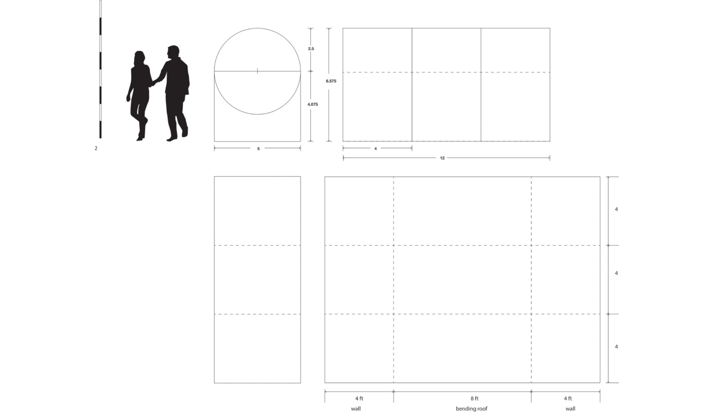

<!DOCTYPE html>
<html>
    <head>
        <meta charset="utf-8" />
        <meta name="viewport" content="width=device-width, initial-scale=1">
        <title>Galactic Walk</title>
        <link rel="stylesheet" type="text/css" href="../css/styles.css">
        <link rel="preconnect" href="https://fonts.googleapis.com">
        <link rel="preconnect" href="https://fonts.googleapis.com">
        <link rel="preconnect" href="https://fonts.gstatic.com" crossorigin>
        <link href="https://fonts.googleapis.com/css2?family=Courier+Prime:ital,wght@0,400;0,700;1,400;1,700&family=Montserrat:ital,wght@0,100..900;1,100..900&display=swap" rel="stylesheet">
        <link rel="icon" type="image/png" href="../dy_favicon.png">
    </head>
</html>
<body>
    <div class="mode-toggle">
        <button id="darkModeToggle">
            
        </button>
    </div>
    <header>
        <div class="language-selector">
            <a href="../sub_ tunnel_kr.html">KR</a>
            <div class="lang-divider"></div>
            <a href="#" class="active">EN</a>
            <div class="lang-divider"></div>
            <a href="../cn/sub_ tunnel_cn.html">CN</a>
        </div>
    </header>
    <div class="sub-contents">
        <a href="index_en.html">&lt; Back to Home</a>
        
        <div class="sub-contents-text">
            <div class="sub-text-title">Overview</div>
            <div class="sub-text-p">
                Galactic Walk is an immersive design project that offers users an experience as if they are directly exploring space. It symbolically represents the connection to the cosmos through a tunnel filled with stars. Inside this tunnel, users can interact by finding sensors and activating six LED constellations as they explore the space.
                <br/><br/>
                As users move through the tunnel, black lights illuminate stars painted with fluorescent paint, creating a vivid impression as if walking through actual outer space. Additionally, users can freely explore the tunnel with UV flashlights to find hidden conductive ink targets. Pressing these targets activates LED constellations, providing deeper interaction.
                <br/><br/>
                I contributed 50% to the development of this project, connecting motion sensors and ultrasonic sensors using Arduino. By incorporating these technological elements, the lighting and constellation activations in the tunnel respond to user movements, creating a more immersive experience.
                <br/><br/>
                Galactic Walk transcends simple space design, blending technology and art in an innovative project that aims to emotionally connect users with the universe and stimulate curiosity and exploration about space.
            </div>
        </div>
                
        
        
        
        
        
        
        

    <footer>
        <p>&copy; 2024 Dayeong Kim. All rights reserved.</p>
    </footer>

    <script src="../js/scripts.js"></script>
</body>